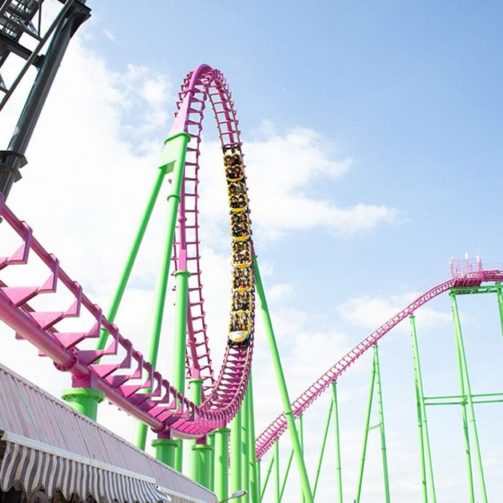

Height Requirement
1.2m (1.4m alone)
Top Speed
55.9 mph
Price
£7.50
Discovery Wristband Required
About this Ride
Millennium, opened in 1999, was Fantasy Island's first coaster with inversions. This Vekoma Steel Coaster features three thrilling inversions: two vertical loops and a sidewinder. Recently refurbished in 2018, the coaster sports a striking purple track with lime green supports. The station received a modern upgrade in 2023 with new queue lines and scanners.